Penugonda ornament collectionPenugonda ornament collection
Sixteen original vector compositions, one per public page. A shared fine gold line ties together lotus, floral, woven-loop, leaf and geometric structures. These are decorative drawings, not assertions about specific sacred diagrams.
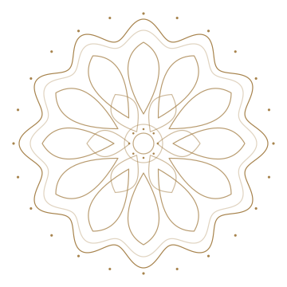
Welcome bloom
/
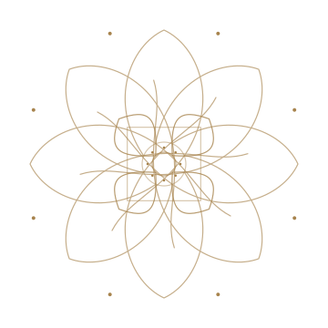
Woven compass
/overview
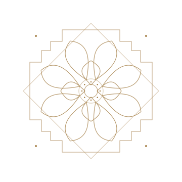
Stepped sanctuary
/about
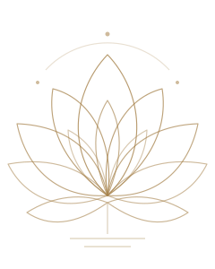
Upright lotus
/vasavi-dham
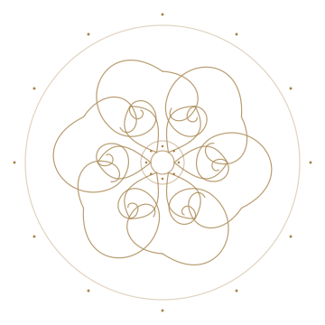
Vine medallion
/story
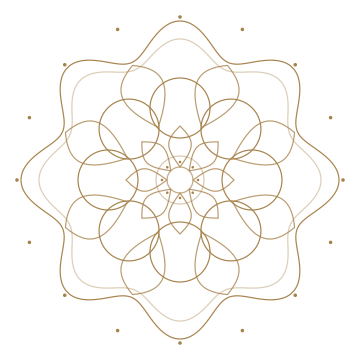
Offering garland
/donations
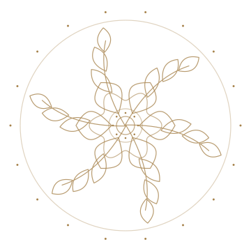
Grain wreath
/donations/annadanam
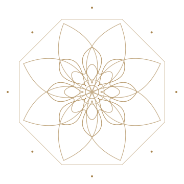
Woven diamond flower
/donations/e-hundi
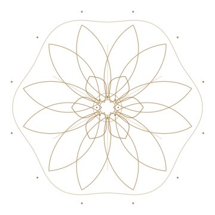
Leaf wheel
/donations/goshala
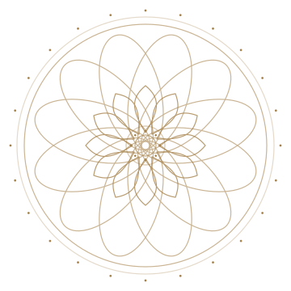
Iris blossom
/gallery/photos
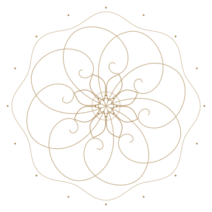
Turning scroll
/gallery/videos
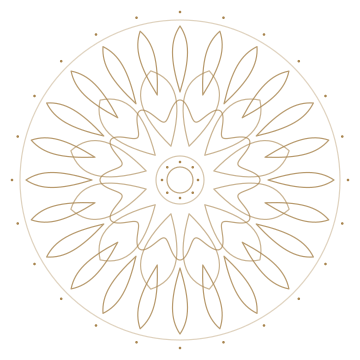
Sunburst medallion
/news
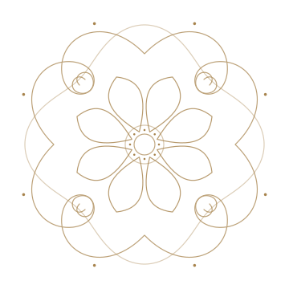
Four-scroll blossom
/newsletter
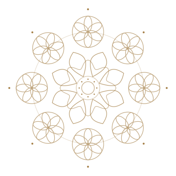
Linked floral circle
/trustees
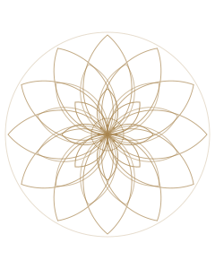
Layered lotus
/contact
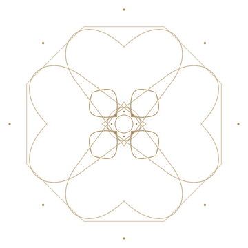
Interlaced seal
/privacy